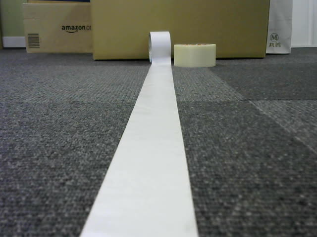
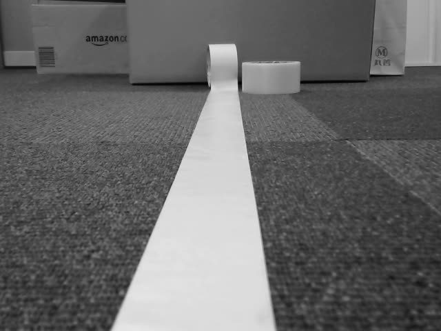
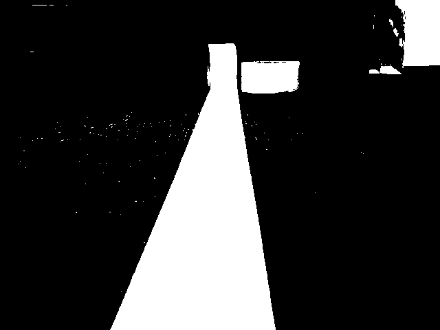
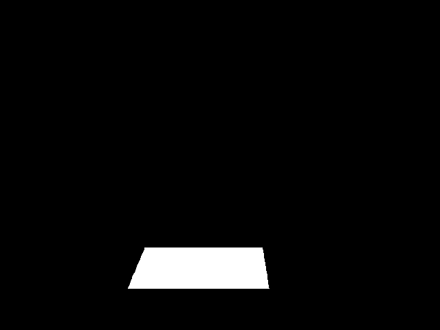
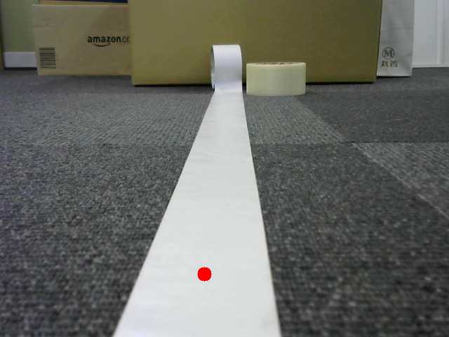
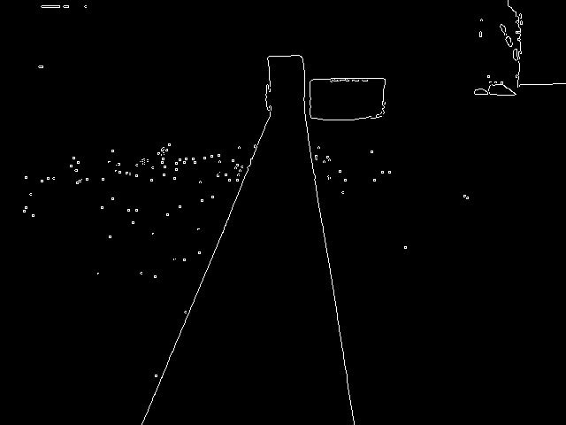
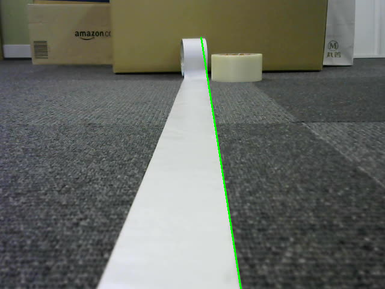

演習7「白線を検出して自動走行する」
カメラ画像から検出した白線に沿ってZumoを走行させる。
- 1本の線に沿って走る。
- 2本の線の間を走る。
白線を検出する方法（cv2.moments）
カメラ画像から白い部分を抜き取り、その重心を計算することでZumoを動かします。
画像を読み込む。（静止画で説明します、test.pngはTeamsにアップしておきます）
cv_image = cv2.imread('./img/test.png')

グレースケールに変換する。
gray = cv2.cvtColor(cv_image, cv2.COLOR_BGR2GRAY)

2値化する。
ret, thresh = cv2.threshold(gray, 127, 255, cv2.THRESH_BINARY)

画像の上の部分（上の3/4）と下の部分（下の1/8）を黒く塗りつぶす。
h, w = thresh.shape
search_top = 6 * h / 8
search_bot = 7 * h / 8
thresh[0:search_top, 0:w] = 0
thresh[search_bot:h, 0:w] = 0

白い部分の重心を求めて、赤い点を描く。
M = cv2.moments(thresh)
if M['m00'] > 0:
cx = int(M['m10'] / M['m00'])
cy = int(M['m01'] / M['m00'])
cv2.circle(cv_image, (cx, cy), 10, (0, 0, 255), -1)

白線を検出する方法（cv2.HoughLines）
カメラ画像から直線を検出して、Zumoを動かします。２値化までは上の方法と同じです。
白線の左側のエッジが検出できていません。
Canny法でエッジ検出する。
edges = cv2.Canny(thresh, 220, 250, apertureSize = 3)

ハフ変換で直線を抽出する。
lines = cv2.HoughLines(edges, rho=1, theta=np.pi/180, threshold=200)
for line in lines:
rho, theta = line[0]
a = np.cos(theta)
b = np.sin(theta)
x0 = a*rho
y0 = b*rho
x1 = int(x0 + 1000*(-b))
y1 = int(y0 + 1000*(a))
x2 = int(x0 - 1000*(-b))
y2 = int(y0 - 1000*(a))
cv2.line(cv_image, (x1,y1), (x2,y2), (0,0,255) ,2)

確率的ハフ変換で直線を抽出する。
lines = cv2.HoughLinesP(edges, rho=1, theta=np.pi/180, threshold=200, minLineLength=100, maxLineGap=100)
for line in lines:
x1, y1, x2, y2 = line[0]
cv2.line(cv_image, (x1,y1), (x2,y2), (0,255,0), 2)
